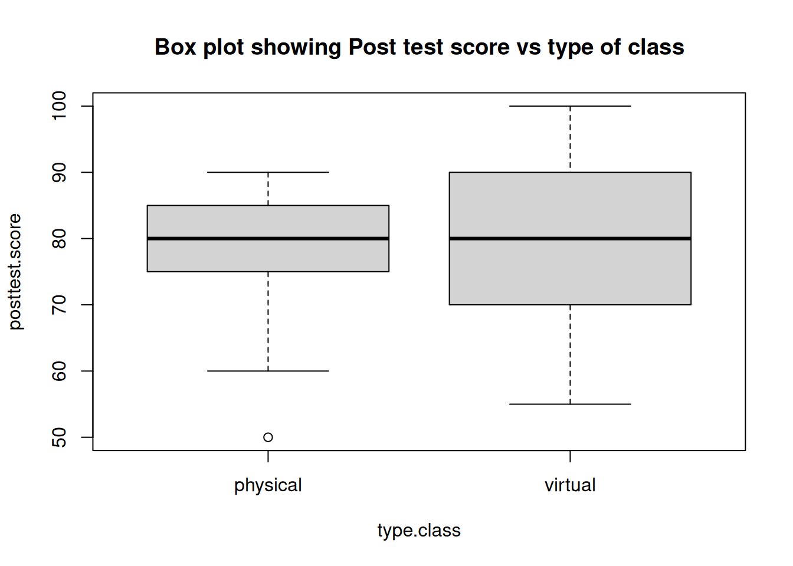
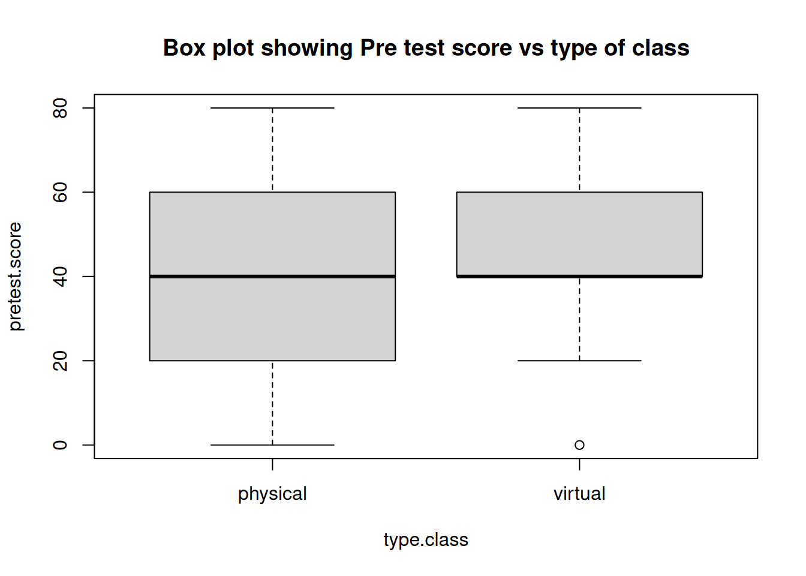
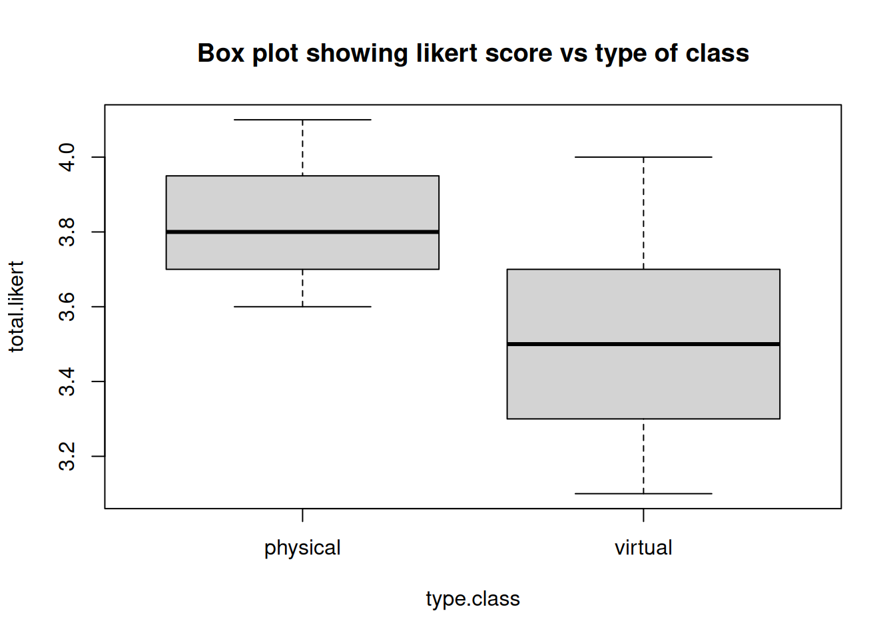
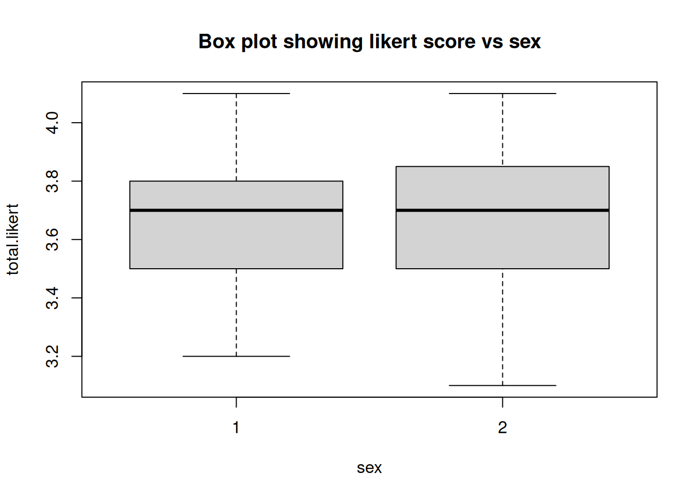
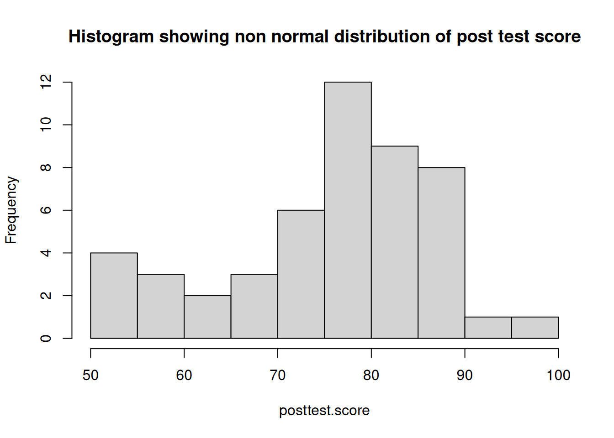
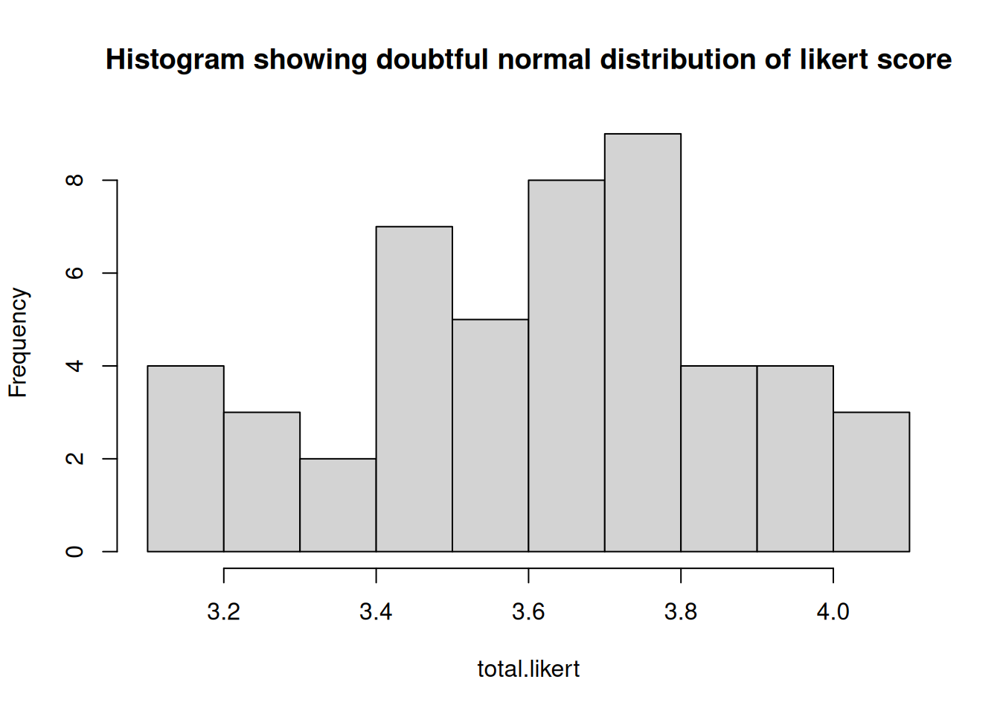
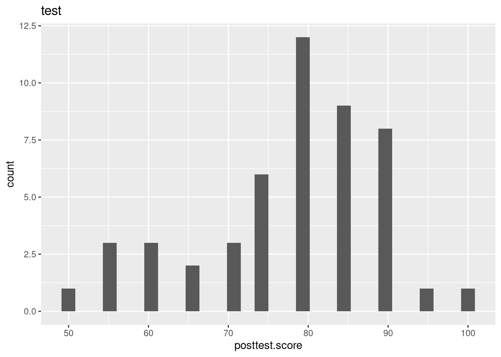

flowchart LR
Record --> Data --> Tidy-data --> Data-analysis
Data wrangling
Data wrangling is the process of making data ready for modelling. It is a tedious task and involves different logical steps.
Core Concepts
Always look directly into data and see how it look like
Think how it should look like
Think how to rearrange Information to achieve what we want
Make sure that what we does is doing what we want at every step.
r is an excellent lower level language for data wrangling. The newer data.table make it even more faster and intuitive. data. table package in r is faster than not only tidyverse, it beats most other languages including python. Mainly used for data manipulation, it retains native data. frame and all functions written for base r and tidyverse work with data. table.
eg: % > % is called pipe function. It essentially means ‘take whatever on the left side and make it the first argument for anything on the right Side’. It comes with tidyverse package. It can also be used with data.table. 1
data.table
data.table looks like data.frame superficially but it is lot more efficient, fast and allow numerous actions by simple commands.
flowchart TD
A{data.table} --> B[i]
B --> C[subsetting row]
A --> D[j]
D --> E[subsetting & calculating in column]
A --> F[by]
F --> G[grouping]
A --> H[useful codes]
H --> I[fread]
H --> J[walrus]
Old data.frame allow sub-setting rows and selecting columns. data.table which uses the extended syntax
\[ dt[i,j,by] \]
allow lot more options.
i,j and by
iallows sub-setting and ordering row
dt[i] allow multiple actions at row level of the data. Fundamentally this can be grouped in to sub-setting and ordering.
flowchart TD i --> subsetting i --> ordering
Sub-setting
Let us take an example,
We have a data set called virtual.csv stored in our computer. The data belongs to a quasi experimental study which compared the effectiveness of virtual class room with respect to physical class room. It also compared the student perception of the two modalities on a likert scale. Study divided students in to two groups, virtual and physical and asked following questions:
- Is there any difference in the post test score of students in virtual and physical group?
- Is there any difference in the student perception in virtual and physical group about the modality of delivery of class?
We can bring it to r environment using fread command in the data.table library.
library(data.table)
dt=fread("virtual.csv")Code
library(data.table)
dt=fread("virtual.csv")We can see that it contains a set of simple data comparing the performance of medical students in physical classes vs virtual classes and their perceptions.
Select only virtual data
Assume, we want to see only the virtual class students. This can be easily achieved by sub-setting the type.class key in the data by “virtual” as shown below.
library(data.table)
dt=fread("virtual.csv")
dtv=dt[type.class == "virtual"]
head(dtv)Code
library(data.table)
dt=fread("virtual.csv")
dtv=dt[type.class == "virtual"]
head(dtv)
## idertifier type.class pretest.score pretest.rank posttest.score
## <char> <char> <int> <int> <int>
## 1: VIR1 virtual 40 2 100
## 2: VIR2 virtual 40 2 95
## 3: VIR3 virtual 60 3 85
## 4: VIR4 virtual 40 2 70
## 5: VIR5 virtual 60 3 75
## 6: VIR6 virtual 60 3 90
## posttest.rank sex likert.1 likert.2 likert.3 likert.4 likert.5 likert.6
## <int> <int> <int> <int> <int> <int> <int> <int>
## 1: 5 1 3 4 3 3 4 4
## 2: 5 1 3 5 4 2 3 4
## 3: 5 2 4 4 3 3 4 3
## 4: 4 2 5 4 4 2 3 4
## 5: 4 1 4 4 3 3 4 3
## 6: 5 1 3 5 3 2 3 4
## likert.7 likert.8 likert.9 likert.10 likert.total
## <int> <int> <int> <int> <num>
## 1: 4 2 4 2 3.3
## 2: 4 3 4 4 3.6
## 3: 4 2 3 2 3.2
## 4: 4 3 4 2 3.5
## 5: 4 2 4 2 3.3
## 6: 3 3 3 4 3.3Select first 2 rows
If we want to select only first 2 rows2 , us the following code.
dt2=dt[1:2]
dt2Code
dt2=dt[1:2]
dt2
## idertifier type.class pretest.score pretest.rank posttest.score
## <char> <char> <int> <int> <int>
## 1: VIR1 virtual 40 2 100
## 2: VIR2 virtual 40 2 95
## posttest.rank sex likert.1 likert.2 likert.3 likert.4 likert.5 likert.6
## <int> <int> <int> <int> <int> <int> <int> <int>
## 1: 5 1 3 4 3 3 4 4
## 2: 5 1 3 5 4 2 3 4
## likert.7 likert.8 likert.9 likert.10 likert.total
## <int> <int> <int> <int> <num>
## 1: 4 2 4 2 3.3
## 2: 4 3 4 4 3.6Ordering
Variables in the rows can be arranged in ascending or descending order by using the order() command as shown below.
dta=dt[order(posttest.score)] # use -posttest.score for descending order
dtaCode
dta=dt[order(posttest.score)]
# use -posttest.score for descending order
dta
## idertifier type.class pretest.score pretest.rank posttest.score
## <char> <char> <int> <int> <int>
## 1: PHY23 physical 20 1 50
## 2: VIR11 virtual 40 2 55
## 3: VIR16 virtual 60 3 55
## 4: VIR24 virtual 60 3 55
## 5: VIR8 virtual 40 2 60
## 6: PHY2 physical 40 2 60
## 7: PHY3 physical 40 2 60
## 8: VIR23 virtual 80 4 65
## 9: PHY24 physical 40 2 65
## 10: VIR4 virtual 40 2 70
## 11: VIR22 virtual 60 3 70
## 12: PHY12 physical 0 1 70
## 13: VIR5 virtual 60 3 75
## 14: VIR13 virtual 40 2 75
## 15: VIR25 virtual 60 3 75
## 16: PHY5 physical 20 1 75
## 17: PHY10 physical 80 4 75
## 18: PHY11 physical 20 1 75
## 19: VIR7 virtual 40 2 80
## 20: VIR14 virtual 20 1 80
## 21: VIR18 virtual 80 4 80
## 22: VIR19 virtual 60 3 80
## 23: VIR20 virtual 20 1 80
## 24: PHY8 physical 40 2 80
## 25: PHY15 physical 20 1 80
## 26: PHY16 physical 20 1 80
## 27: PHY17 physical 40 2 80
## 28: PHY18 physical 60 3 80
## 29: PHY19 physical 20 2 80
## 30: PHY22 physical 80 4 80
## 31: VIR3 virtual 60 3 85
## 32: VIR17 virtual 40 2 85
## 33: VIR21 virtual 80 4 85
## 34: PHY4 physical 60 3 85
## 35: PHY7 physical 20 1 85
## 36: PHY9 physical 20 1 85
## 37: PHY13 physical 0 1 85
## 38: PHY20 physical 60 3 85
## 39: PHY21 physical 60 3 85
## 40: VIR6 virtual 60 3 90
## 41: VIR9 virtual 20 1 90
## 42: VIR10 virtual 60 3 90
## 43: VIR12 virtual 0 1 90
## 44: VIR15 virtual 20 1 90
## 45: PHY1 physical 40 2 90
## 46: PHY6 physical 60 3 90
## 47: PHY14 physical 0 1 90
## 48: VIR2 virtual 40 2 95
## 49: VIR1 virtual 40 2 100
## idertifier type.class pretest.score pretest.rank posttest.score
## posttest.rank sex likert.1 likert.2 likert.3 likert.4 likert.5 likert.6
## <int> <int> <int> <int> <int> <int> <int> <int>
## 1: 3 1 3 2 5 5 4 2
## 2: 3 1 3 5 4 3 4 4
## 3: 3 2 3 4 3 3 3 4
## 4: 3 2 4 4 3 3 4 3
## 5: 3 2 3 5 3 2 2 3
## 6: 3 2 4 2 4 4 4 4
## 7: 3 2 4 4 4 2 4 4
## 8: 4 2 4 4 4 4 4 2
## 9: 4 1 4 2 5 5 5 4
## 10: 4 2 5 4 4 2 3 4
## 11: 4 1 4 4 4 4 2 2
## 12: 4 2 5 4 4 3 3 4
## 13: 4 1 4 4 3 3 4 3
## 14: 4 1 3 4 3 3 3 3
## 15: 4 2 4 4 4 4 4 4
## 16: 4 2 4 4 5 4 4 5
## 17: 4 2 4 4 4 3 3 4
## 18: 4 1 5 4 3 3 4 3
## 19: 4 2 4 4 4 3 4 3
## 20: 4 2 3 4 4 4 3 3
## 21: 4 2 4 4 2 4 4 2
## 22: 4 1 5 4 3 3 3 3
## 23: 4 2 4 4 2 3 4 4
## 24: 4 2 4 4 3 4 3 4
## 25: 4 2 4 4 4 4 4 4
## 26: 4 2 3 4 4 4 5 3
## 27: 4 1 4 4 5 3 4 4
## 28: 4 2 4 4 3 4 5 2
## 29: 4 2 4 4 5 4 4 4
## 30: 4 2 3 2 5 5 5 4
## 31: 5 2 4 4 3 3 4 3
## 32: 5 2 4 4 2 3 2 4
## 33: 5 2 4 4 3 3 4 4
## 34: 5 2 3 4 4 2 3 4
## 35: 5 2 4 4 4 4 4 4
## 36: 5 1 4 2 4 4 4 4
## 37: 5 1 5 4 4 4 4 3
## 38: 5 1 4 2 5 5 5 2
## 39: 5 2 4 4 5 3 4 4
## 40: 5 1 3 5 3 2 3 4
## 41: 5 2 4 5 3 3 4 4
## 42: 5 2 3 5 4 2 3 4
## 43: 5 1 4 4 3 3 3 4
## 44: 5 2 5 4 4 3 4 3
## 45: 5 1 4 4 5 4 3 5
## 46: 5 1 4 4 4 2 3 5
## 47: 5 2 4 4 3 4 2 4
## 48: 5 1 3 5 4 2 3 4
## 49: 5 1 3 4 3 3 4 4
## posttest.rank sex likert.1 likert.2 likert.3 likert.4 likert.5 likert.6
## likert.7 likert.8 likert.9 likert.10 likert.total
## <int> <int> <int> <int> <num>
## 1: 3 4 5 4 3.7
## 2: 4 4 4 3 3.8
## 3: 3 4 4 4 3.5
## 4: 3 4 2 4 3.4
## 5: 3 4 4 2 3.1
## 6: 3 4 4 5 3.8
## 7: 3 4 4 4 3.7
## 8: 3 4 4 4 3.7
## 9: 3 4 5 4 4.1
## 10: 4 3 4 2 3.5
## 11: 3 4 4 4 3.5
## 12: 4 4 3 4 3.8
## 13: 4 2 4 2 3.3
## 14: 4 4 2 3 3.2
## 15: 4 3 4 5 4.0
## 16: 4 4 3 4 4.1
## 17: 4 3 4 4 3.7
## 18: 4 3 4 4 3.7
## 19: 3 2 3 2 3.2
## 20: 4 4 4 4 3.7
## 21: 4 4 3 3 3.4
## 22: 4 4 3 3 3.5
## 23: 4 4 2 4 3.5
## 24: 4 4 4 5 3.9
## 25: 3 4 4 4 3.9
## 26: 4 4 4 4 3.9
## 27: 3 4 3 4 3.8
## 28: 3 4 3 4 3.6
## 29: 3 4 3 4 3.9
## 30: 3 4 5 4 4.0
## 31: 4 2 3 2 3.2
## 32: 4 4 4 4 3.5
## 33: 4 4 4 4 3.8
## 34: 4 3 4 5 3.6
## 35: 4 3 4 5 4.0
## 36: 4 4 4 4 3.8
## 37: 4 4 4 4 4.0
## 38: 3 4 3 4 3.7
## 39: 3 4 3 4 3.8
## 40: 3 3 3 4 3.3
## 41: 3 4 4 3 3.7
## 42: 3 4 4 4 3.6
## 43: 4 4 3 3 3.5
## 44: 3 4 4 4 3.8
## 45: 4 4 4 4 4.1
## 46: 4 3 4 5 3.8
## 47: 3 4 4 4 3.6
## 48: 4 3 4 4 3.6
## 49: 4 2 4 2 3.3
## likert.7 likert.8 likert.9 likert.10 likert.totaljallows manipulations in the column
dt[,j] allow selection, correction or mutation and calculations at column level.
flowchart TD
A{j} --> B[Select]
A --> C[Calculation]
A --> D[Correct typo]
A --> E[Add or Delete column]
Select specific column3
Suppose we want to select only the necessary columns from our dt data set. We can do this by simple code as shown below.
dtc=dt[,.(idertifier,type.class,pretest.score,posttest.score,sex,likert.total)]
dtcCode
dtc=dt[,.(idertifier,type.class,pretest.score,posttest.score,sex,likert.total)]
dtc
## idertifier type.class pretest.score posttest.score sex likert.total
## <char> <char> <int> <int> <int> <num>
## 1: VIR1 virtual 40 100 1 3.3
## 2: VIR2 virtual 40 95 1 3.6
## 3: VIR3 virtual 60 85 2 3.2
## 4: VIR4 virtual 40 70 2 3.5
## 5: VIR5 virtual 60 75 1 3.3
## 6: VIR6 virtual 60 90 1 3.3
## 7: VIR7 virtual 40 80 2 3.2
## 8: VIR8 virtual 40 60 2 3.1
## 9: VIR9 virtual 20 90 2 3.7
## 10: VIR10 virtual 60 90 2 3.6
## 11: VIR11 virtual 40 55 1 3.8
## 12: VIR12 virtual 0 90 1 3.5
## 13: VIR13 virtual 40 75 1 3.2
## 14: VIR14 virtual 20 80 2 3.7
## 15: VIR15 virtual 20 90 2 3.8
## 16: VIR16 virtual 60 55 2 3.5
## 17: VIR17 virtual 40 85 2 3.5
## 18: VIR18 virtual 80 80 2 3.4
## 19: VIR19 virtual 60 80 1 3.5
## 20: VIR20 virtual 20 80 2 3.5
## 21: VIR21 virtual 80 85 2 3.8
## 22: VIR22 virtual 60 70 1 3.5
## 23: VIR23 virtual 80 65 2 3.7
## 24: VIR24 virtual 60 55 2 3.4
## 25: VIR25 virtual 60 75 2 4.0
## 26: PHY1 physical 40 90 1 4.1
## 27: PHY2 physical 40 60 2 3.8
## 28: PHY3 physical 40 60 2 3.7
## 29: PHY4 physical 60 85 2 3.6
## 30: PHY5 physical 20 75 2 4.1
## 31: PHY6 physical 60 90 1 3.8
## 32: PHY7 physical 20 85 2 4.0
## 33: PHY8 physical 40 80 2 3.9
## 34: PHY9 physical 20 85 1 3.8
## 35: PHY10 physical 80 75 2 3.7
## 36: PHY11 physical 20 75 1 3.7
## 37: PHY12 physical 0 70 2 3.8
## 38: PHY13 physical 0 85 1 4.0
## 39: PHY14 physical 0 90 2 3.6
## 40: PHY15 physical 20 80 2 3.9
## 41: PHY16 physical 20 80 2 3.9
## 42: PHY17 physical 40 80 1 3.8
## 43: PHY18 physical 60 80 2 3.6
## 44: PHY19 physical 20 80 2 3.9
## 45: PHY20 physical 60 85 1 3.7
## 46: PHY21 physical 60 85 2 3.8
## 47: PHY22 physical 80 80 2 4.0
## 48: PHY23 physical 20 50 1 3.7
## 49: PHY24 physical 40 65 1 4.1
## idertifier type.class pretest.score posttest.score sex likert.totaldata.table’s j can handle more than just selecting columns - it can handle expressions, i.e., computing on columns.
Correct typos
In the dataset dt, we can see that the first key, identifier is misspelt as idertifier. We can correct it by following code
dtc=dt[,.(identifier=idertifier,type.class,pretest.score,posttest.score,sex,likert.total)]
dtcCode
dtc=dt[,.(identifier=idertifier,type.class,pretest.score,posttest.score,sex,likert.total)]
dtc
## identifier type.class pretest.score posttest.score sex likert.total
## <char> <char> <int> <int> <int> <num>
## 1: VIR1 virtual 40 100 1 3.3
## 2: VIR2 virtual 40 95 1 3.6
## 3: VIR3 virtual 60 85 2 3.2
## 4: VIR4 virtual 40 70 2 3.5
## 5: VIR5 virtual 60 75 1 3.3
## 6: VIR6 virtual 60 90 1 3.3
## 7: VIR7 virtual 40 80 2 3.2
## 8: VIR8 virtual 40 60 2 3.1
## 9: VIR9 virtual 20 90 2 3.7
## 10: VIR10 virtual 60 90 2 3.6
## 11: VIR11 virtual 40 55 1 3.8
## 12: VIR12 virtual 0 90 1 3.5
## 13: VIR13 virtual 40 75 1 3.2
## 14: VIR14 virtual 20 80 2 3.7
## 15: VIR15 virtual 20 90 2 3.8
## 16: VIR16 virtual 60 55 2 3.5
## 17: VIR17 virtual 40 85 2 3.5
## 18: VIR18 virtual 80 80 2 3.4
## 19: VIR19 virtual 60 80 1 3.5
## 20: VIR20 virtual 20 80 2 3.5
## 21: VIR21 virtual 80 85 2 3.8
## 22: VIR22 virtual 60 70 1 3.5
## 23: VIR23 virtual 80 65 2 3.7
## 24: VIR24 virtual 60 55 2 3.4
## 25: VIR25 virtual 60 75 2 4.0
## 26: PHY1 physical 40 90 1 4.1
## 27: PHY2 physical 40 60 2 3.8
## 28: PHY3 physical 40 60 2 3.7
## 29: PHY4 physical 60 85 2 3.6
## 30: PHY5 physical 20 75 2 4.1
## 31: PHY6 physical 60 90 1 3.8
## 32: PHY7 physical 20 85 2 4.0
## 33: PHY8 physical 40 80 2 3.9
## 34: PHY9 physical 20 85 1 3.8
## 35: PHY10 physical 80 75 2 3.7
## 36: PHY11 physical 20 75 1 3.7
## 37: PHY12 physical 0 70 2 3.8
## 38: PHY13 physical 0 85 1 4.0
## 39: PHY14 physical 0 90 2 3.6
## 40: PHY15 physical 20 80 2 3.9
## 41: PHY16 physical 20 80 2 3.9
## 42: PHY17 physical 40 80 1 3.8
## 43: PHY18 physical 60 80 2 3.6
## 44: PHY19 physical 20 80 2 3.9
## 45: PHY20 physical 60 85 1 3.7
## 46: PHY21 physical 60 85 2 3.8
## 47: PHY22 physical 80 80 2 4.0
## 48: PHY23 physical 20 50 1 3.7
## 49: PHY24 physical 40 65 1 4.1
## identifier type.class pretest.score posttest.score sex likert.totalComputing on columns
To calculate the mean post test score of the virtual class, following code can be used.
dtm=dtc[type.class=="virtual",mean(posttest.score)]
dtmCode
dtm=dtc[type.class=="virtual",mean(posttest.score)]
dtm
## [1] 78.2Add or delete column
If we want to add mean post test score of virtual on to dtv.
To create or delete column, we use :=, called walrus operator.4
dtvm=dtc[,mean.pt.score:=mean(posttest.score)]
dtvmCode
dtvm=dtc[,mean.pt.score:=mean(posttest.score)]
head(dtvm)
## identifier type.class pretest.score posttest.score sex likert.total
## <char> <char> <int> <int> <int> <num>
## 1: VIR1 virtual 40 100 1 3.3
## 2: VIR2 virtual 40 95 1 3.6
## 3: VIR3 virtual 60 85 2 3.2
## 4: VIR4 virtual 40 70 2 3.5
## 5: VIR5 virtual 60 75 1 3.3
## 6: VIR6 virtual 60 90 1 3.3
## mean.pt.score
## <num>
## 1: 78.06122
## 2: 78.06122
## 3: 78.06122
## 4: 78.06122
## 5: 78.06122
## 6: 78.06122To delete mean.pt.score,
dtvn=dtvm[,mean.pt.score:=NULL]
dtvnCode
dtvn=dtvm[,mean.pt.score:=NULL]
head(dtvn)
## identifier type.class pretest.score posttest.score sex likert.total
## <char> <char> <int> <int> <int> <num>
## 1: VIR1 virtual 40 100 1 3.3
## 2: VIR2 virtual 40 95 1 3.6
## 3: VIR3 virtual 60 85 2 3.2
## 4: VIR4 virtual 40 70 2 3.5
## 5: VIR5 virtual 60 75 1 3.3
## 6: VIR6 virtual 60 90 1 3.3byallow grouping
flowchart LR by --> grouping
Aggregation
To group or aggregate data based on a key, the by operator can be used.
dtmn=dt[,mean(posttest.score), by=.(type.class)]
dtmnCode
dtmn=dt[,mean(posttest.score), by=.(type.class)]
dtmn
## type.class V1
## <char> <num>
## 1: virtual 78.20000
## 2: physical 77.91667data.table allow fast reading of data in to data table
flowchart TD A[multiple data tables] --> B(map) B --> C(rbind or rbindlist) C --> D[Stack one on top of another column] A --> E[merge] E --> F(attach raws to the side of raws)
rbind
rbind ( ) stacks data variables on top of one another from different data. tables. For this to work all the identifiers should be same on the different files that has to be compiled.
#| collapse: true
library(readxl)
Jan <- read_excel("Jan.xlsx")
jandt=as.data.table(Jan)
str(jandt)
Feb <- read_excel("Feb.xlsx")
febdt=as.data.table(Feb)
str(febdt)Code
library(readxl)
Jan <- read_excel("Jan.xlsx")
jandt=as.data.table(Jan)
str(jandt)
## Classes 'data.table' and 'data.frame': 10 obs. of 4 variables:
## $ Name : chr "xy" "xy" "xy" "xy" ...
## $ Age : chr "dd" "dd" "dd" "dd" ...
## $ Sex : chr "ss" "ss" "ss" "scut" ...
## $ Occupation: num 1 1 1 200 1 1 1 1 2 2
## - attr(*, ".internal.selfref")=<externalptr>
Feb <- read_excel("feb.xlsx")
febdt=as.data.table(Feb)
str(febdt)
## Classes 'data.table' and 'data.frame': 10 obs. of 4 variables:
## $ Name : chr "ab" "ab" "ab" "ab" ...
## $ Age : chr "cc" "cc" "cc" "cc" ...
## $ Sex : chr "tt" "tt" "tt" "sambu" ...
## $ Occupation: num 3 3 3 500 2 2 2 2 2 2
## - attr(*, ".internal.selfref")=<externalptr>#| collapse: true
rbind(jandt,febdt)Code
rbind(jandt,febdt)
## Name Age Sex Occupation
## <char> <char> <char> <num>
## 1: xy dd ss 1
## 2: xy dd ss 1
## 3: xy dd ss 1
## 4: xy dd scut 200
## 5: xy dd ss 1
## 6: xy dd ss 1
## 7: xy dd ss 1
## 8: xy dd s 1
## 9: xy dd y 2
## 10: xy dd y 2
## 11: ab cc tt 3
## 12: ab cc tt 3
## 13: ab cc tt 3
## 14: ab cc sambu 500
## 15: ab cc tt 2
## 16: ab cc tt 2
## 17: ab cc tt 2
## 18: ab cc tt 2
## 19: ab cc tt 2
## 20: ab cc tt 2
## Name Age Sex Occupationmerge
flowchart TD A[merge] --> B(outer join) B --> C(use all=TRUE) A --> D[left join] D --> E[use all.x=TRUE] A --> F(right join) F --> G(use all.y=TRUE)
We can merge the data tables using merge ( ) function, if there is at-least one common identifier in each row.
eg: Assume we have two data tables with a common identifier ID.
Code
# Load the data.table package
library(data.table)
# Create the first data table with names and ages
dt1 <- data.table(
id=c("1","2","3","4","5"),
Name = c("Scut", "Sambu", "Shibu", "Diana", "Echu"),
Age = c(28, 34, 23, 41, 30)
)
# Create the second data table with sex and occupation
dt2 <- data.table(
id=c("1","2","3","4","5"),
Sex = c("Female", "Male", "Male", "Female", "Male"),
Occupation = c("Fraudster", "Doctor", "Artist", "Teacher", "Chef")
)
# Print the data tables to verify
print(dt1)
## id Name Age
## <char> <char> <num>
## 1: 1 Scut 28
## 2: 2 Sambu 34
## 3: 3 Shibu 23
## 4: 4 Diana 41
## 5: 5 Echu 30
print(dt2)
## id Sex Occupation
## <char> <char> <char>
## 1: 1 Female Fraudster
## 2: 2 Male Doctor
## 3: 3 Male Artist
## 4: 4 Female Teacher
## 5: 5 Male ChefNow we can merge dt1 and dt2 using merge( ) function
Code
#|collapse: TRUE
dtf=merge.data.table(dt1,dt2, by="id", all = TRUE)
head(dtf)Key: <id>
id Name Age Sex Occupation
<char> <char> <num> <char> <char>
1: 1 Scut 28 Female Fraudster
2: 2 Sambu 34 Male Doctor
3: 3 Shibu 23 Male Artist
4: 4 Diana 41 Female Teacher
5: 5 Echu 30 Male Chefreadxl() and map()
If data is in multiple excel files, use readxl( ), map ( ) and rbindlist ( ) to compile data.
map ( ) comes with purr package.
Code
library(readxl)
library(purrr)
##
## Attaching package: 'purrr'
## The following object is masked from 'package:data.table':
##
## transpose
filelist=list.files(path="/Users/drkmenon/Sync/knotesquarto/Biomedical/Research Methodology",pattern='xlsx',full.names = TRUE)
process.file=function(df) {
sales=df[1:5,4]
employee=df[1:5,3]
return(data.table(sales=sales,employee=employee))
}
compiled.data=filelist |>
map(read_excel) |>
map(process.file) |>
rbindlist()
compiled.data
## sales.Occupation employee.Sex
## <num> <char>
## 1: 3 tt
## 2: 3 tt
## 3: 3 tt
## 4: 500 sambu
## 5: 2 tt
## 6: 1 ss
## 7: 1 ss
## 8: 1 ss
## 9: 200 scut
## 10: 1 ssData to tidy data
A tidy data should satisfy following criteria
Each variable forms a column
Each observation should form a row
Each observation unit forms a table
In tidy data there are two types of data points
Identifying variable (key)
Measures/Values
eg:
| ID | Person | Points | Consumption |
|---|---|---|---|
| 1 | scut | 1 | 100 |
| 2 | sambu | 30 | 10 |
| 3 | shibu | 50 | 5 |
Untidy data
Following data is not so tidy
| ID | Religion | 10-20k | 20-30k | >30k |
|---|---|---|---|---|
| Jew | Jew | 100 | 20 | 10 |
| Chr | Chr | 200 | 40 | 15 |
| Hin | Hin | 2 | 30 | 500 |
How to tidy data
melt ( ) to pivot long and dcast( ) for pivot wide
melt
It takes a single row of N columns and turn it in to N rows in a single column, using keys
melt ( ) asks for
data.table
id.vars
measure.vars (Column names)
variable.name (new name)
value.name (new name)
Syntax
df |>
melt(measure.vars=patterns='^xyz',
variable.name= "",
value.name='')Code
wd=data.table(
ID=c(1,2,3),
Religion=c("jew","chr","hin"),
"10-20k"=c(100,200,2),
"20-30k"=c(20,40,30),
">30k"=c(10,15,500)
)
head(wd)
## ID Religion 10-20k 20-30k >30k
## <num> <char> <num> <num> <num>
## 1: 1 jew 100 20 10
## 2: 2 chr 200 40 15
## 3: 3 hin 2 30 500Make data.table “wd” long
Code
wd |>
melt(measure.vars = patterns('k'),
variable.name = "Income",
value.name = "Number"
)
## ID Religion Income Number
## <num> <char> <fctr> <num>
## 1: 1 jew 10-20k 100
## 2: 2 chr 10-20k 200
## 3: 3 hin 10-20k 2
## 4: 1 jew 20-30k 20
## 5: 2 chr 20-30k 40
## 6: 3 hin 20-30k 30
## 7: 1 jew >30k 10
## 8: 2 chr >30k 15
## 9: 3 hin >30k 500Adding data to r and reading it as data.table
We may once more visit how to add data to r using data table and try to do simple analysis
library(data.table)
dt=fread("virtual.csv")Code
library(data.table)
dt=fread("virtual.csv")How to look at data
vtable
vtable is a package that helps to display the structure better than other commands.
#| collapse: true
vtable::vt(dt)Code
vtable::vt(dt)| Name | Class | Values |
|---|---|---|
| idertifier | character | |
| type.class | character | |
| pretest.score | integer | Num: 0 to 80 |
| pretest.rank | integer | Num: 1 to 4 |
| posttest.score | integer | Num: 50 to 100 |
| posttest.rank | integer | Num: 3 to 5 |
| sex | integer | Num: 1 to 2 |
| likert.1 | integer | Num: 3 to 5 |
| likert.2 | integer | Num: 2 to 5 |
| likert.3 | integer | Num: 2 to 5 |
| likert.4 | integer | Num: 2 to 5 |
| likert.5 | integer | Num: 2 to 5 |
| likert.6 | integer | Num: 2 to 5 |
| likert.7 | integer | Num: 3 to 4 |
| likert.8 | integer | Num: 2 to 4 |
| likert.9 | integer | Num: 2 to 5 |
| likert.10 | integer | Num: 2 to 5 |
| likert.total | numeric | Num: 3.1 to 4.1 |
Other methods
str(dt)
Code
str(dt) ## Classes 'data.table' and 'data.frame': 49 obs. of 18 variables: ## $ idertifier : chr "VIR1" "VIR2" "VIR3" "VIR4" ... ## $ type.class : chr "virtual" "virtual" "virtual" "virtual" ... ## $ pretest.score : int 40 40 60 40 60 60 40 40 20 60 ... ## $ pretest.rank : int 2 2 3 2 3 3 2 2 1 3 ... ## $ posttest.score: int 100 95 85 70 75 90 80 60 90 90 ... ## $ posttest.rank : int 5 5 5 4 4 5 4 3 5 5 ... ## $ sex : int 1 1 2 2 1 1 2 2 2 2 ... ## $ likert.1 : int 3 3 4 5 4 3 4 3 4 3 ... ## $ likert.2 : int 4 5 4 4 4 5 4 5 5 5 ... ## $ likert.3 : int 3 4 3 4 3 3 4 3 3 4 ... ## $ likert.4 : int 3 2 3 2 3 2 3 2 3 2 ... ## $ likert.5 : int 4 3 4 3 4 3 4 2 4 3 ... ## $ likert.6 : int 4 4 3 4 3 4 3 3 4 4 ... ## $ likert.7 : int 4 4 4 4 4 3 3 3 3 3 ... ## $ likert.8 : int 2 3 2 3 2 3 2 4 4 4 ... ## $ likert.9 : int 4 4 3 4 4 3 3 4 4 4 ... ## $ likert.10 : int 2 4 2 2 2 4 2 2 3 4 ... ## $ likert.total : num 3.3 3.6 3.2 3.5 3.3 3.3 3.2 3.1 3.7 3.6 ... ## - attr(*, ".internal.selfref")=<externalptr>tables(dt)
summary(dt)
Stages of data wrangling
Having added the data and looked in to the structure, me have to go through 3 stages before we can do analysis especially if the record is not structured properly
from record to data
data to tidy data
from tidy data to data analysis.
Process of wrangling
From records to data
Record
‘Raw source’, not in workable format.
Create a data.table
virtual.csv has multiple columns, of which we require only the following:
fdt=dt[,.(identifier=as.factor(idertifier),type.class=as.factor(type.class),posttest.score=as.numeric(posttest.score),pretest.score=as.numeric(pretest.score),total.likert=as.numeric(likert.total), sex=as.factor(sex))]
head(fdt)Here we can see that using j, we have sub-setted, renamed and fixed the type of data
Code
fdt=dt[,.(identifier=as.factor(idertifier),type.class=as.factor(type.class),posttest.score=as.numeric(posttest.score),pretest.score=as.numeric(pretest.score),total.likert=as.numeric(likert.total), sex=as.factor(sex))]
head(fdt)
## identifier type.class posttest.score pretest.score total.likert sex
## <fctr> <fctr> <num> <num> <num> <fctr>
## 1: VIR1 virtual 100 40 3.3 1
## 2: VIR2 virtual 95 40 3.6 1
## 3: VIR3 virtual 85 60 3.2 2
## 4: VIR4 virtual 70 40 3.5 2
## 5: VIR5 virtual 75 60 3.3 1
## 6: VIR6 virtual 90 60 3.3 1In our study, the outcome variables are posttest.score and total.likert. The grouping variable is type.class.
Summary of data
Code
summary(fdt)
## identifier type.class posttest.score pretest.score total.likert
## PHY1 : 1 physical:24 Min. : 50.00 Min. : 0.00 Min. :3.100
## PHY10 : 1 virtual :25 1st Qu.: 75.00 1st Qu.:20.00 1st Qu.:3.500
## PHY11 : 1 Median : 80.00 Median :40.00 Median :3.700
## PHY12 : 1 Mean : 78.06 Mean :41.63 Mean :3.665
## PHY13 : 1 3rd Qu.: 85.00 3rd Qu.:60.00 3rd Qu.:3.800
## PHY14 : 1 Max. :100.00 Max. :80.00 Max. :4.100
## (Other):43
## sex
## 1:18
## 2:31
##
##
##
##
##
attach(fdt)
mean.score= fdt[,mean(posttest.score),by=type.class]
mean.pre.score= fdt[,mean(pretest.score),by=type.class]
mean.likert= fdt[,mean(total.likert),by=type.class]
mean.pre.score
## type.class V1
## <fctr> <num>
## 1: virtual 47.20000
## 2: physical 35.83333
mean.score
## type.class V1
## <fctr> <num>
## 1: virtual 78.20000
## 2: physical 77.91667
mean.likert
## type.class V1
## <fctr> <num>
## 1: virtual 3.504000
## 2: physical 3.833333
boxplot(posttest.score~type.class, main="Box plot showing Post test score vs type of class")
Code
boxplot(pretest.score~type.class,main="Box plot showing Pre test score vs type of class")
Code
boxplot(total.likert~type.class, main="Box plot showing likert score vs type of class")
Code
boxplot(total.likert~sex, main="Box plot showing likert score vs sex")
Check for normality visually
hist(posttest.score, main = "",breaks = 15)
hist(total.likert, main="",breaks = 10)Code
hist(posttest.score, main = "Histogram showing non normal distribution of post test score",breaks = 15)
Code
hist(total.likert, main="Histogram showing doubtful normal distribution of likert score",breaks = 10)
Code
library(ggplot2)
ggplot(fdt)+
geom_histogram(mapping = aes(x=posttest.score))+
labs(title = "test")`stat_bin()` using `bins = 30`. Pick better value with `binwidth`.
Here we can see that both posttest.score and total.likert are visually not normally distributed. He may cross check it by doing shapiro test
Test for normality
shapiro.test(posttest.score)Code
shapiro.test(posttest.score)
##
## Shapiro-Wilk normality test
##
## data: posttest.score
## W = 0.92716, p-value = 0.004812a p value of <.005 suggest that posttest score is significantly not normal.
Welch t test
As data is not normal, we have to do modified t test.
t.test(posttest.score,pretest.score,var.equal=FALSE)Code
t.test(posttest.score,pretest.score,var.equal=FALSE)
##
## Welch Two Sample t-test
##
## data: posttest.score and pretest.score
## t = 10.032, df = 71.146, p-value = 2.929e-15
## alternative hypothesis: true difference in means is not equal to 0
## 95 percent confidence interval:
## 29.18870 43.66845
## sample estimates:
## mean of x mean of y
## 78.06122 41.63265t.test(posttest.score~type.class,var.equal=FALSE)Code
t.test(posttest.score~type.class,var.equal=FALSE)
##
## Welch Two Sample t-test
##
## data: posttest.score by type.class
## t = -0.085737, df = 45.72, p-value = 0.932
## alternative hypothesis: true difference in means between group physical and group virtual is not equal to 0
## 95 percent confidence interval:
## -6.936392 6.369726
## sample estimates:
## mean in group physical mean in group virtual
## 77.91667 78.20000Shapiro test for total.likert
shapiro.test(total.likert)Code
shapiro.test(total.likert)
##
## Shapiro-Wilk normality test
##
## data: total.likert
## W = 0.96471, p-value = 0.1479Here the shapiro test is not significant. So the data can be taken as normal.
t.test(total.likert~type.class)Code
t.test(total.likert~type.class)
##
## Welch Two Sample t-test
##
## data: total.likert by type.class
## t = 5.9265, df = 42.974, p-value = 4.686e-07
## alternative hypothesis: true difference in means between group physical and group virtual is not equal to 0
## 95 percent confidence interval:
## 0.2172646 0.4414021
## sample estimates:
## mean in group physical mean in group virtual
## 3.833333 3.504000Creating breaks
{r}
age=c(1:100)
dtb=data.table(age=age,sex=c(rbinom(n = 100,size = 1,prob = .5)))
dtb$class=cut(dtb$age,breaks = c(0,13,28,60,75,101),labels = c("child","young","mature","old","aged"))
head(dtb)Code
age=c(1:100)
dtb=data.table(age=age,sex=c(rbinom(n = 100,size = 1,prob = .5)))
dtb$class=cut(dtb$age,breaks = c(0,13,28,60,75,101),labels = c("child","young","mature","old","aged"))
head(dtb) age sex class
<int> <int> <fctr>
1: 1 0 child
2: 2 1 child
3: 3 1 child
4: 4 1 child
5: 5 1 child
6: 6 0 childMaking data wide
{r}
dtw=dcast(data = dtb,formula = age~sex,value.var = "class")
head(dtw)Code
dtw=dcast(data = dtb,formula = age~sex,value.var = "class")
head(dtw)Key: <age>
age 0 1
<int> <fctr> <fctr>
1: 1 child <NA>
2: 2 <NA> child
3: 3 <NA> child
4: 4 <NA> child
5: 5 <NA> child
6: 6 child <NA>Footnotes
Now from r 4.1 onwards it is built in to base v as I >↩︎
note that, [1:2,] is not necessary. However [1:2,] shows the full picture.
↩︎Select first 2 rows and retain all the columns
dt[,.(j)]: blank followed by , denotes selecting all rows. “.” denote “list”. if “
."is not used, data.table will give the output as vectors, instead of list.↩︎The walrus is a large pinniped marine mammal with discontinuous distribution about the North Pole in the Arctic Ocean and subarctic seas of the Northern Hemisphere. ↩︎